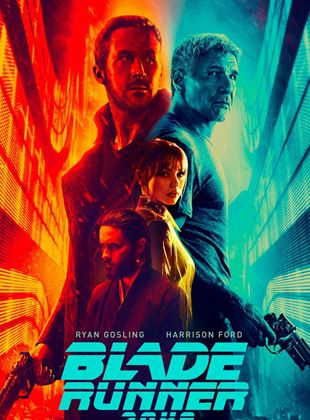
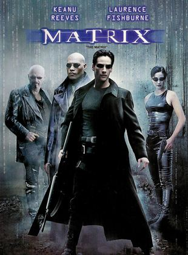

Uma nave espacial, ao retornar para Terra, recebe estranhos sinais vindos de um asteróide. Ao investigarem o local, um dos tripulantes é atacado por um estranho ser. O que parecia ser um ataque isolado se transforma em um terror
constante, pois o tripulante atacado levou para dentro da nave o embrião de um alienígena, que não para de crescer e tem como meta matar toda a tripulação.

Blade Runner 2049
Não recomendado para menores de 14 anos Em Blade Runner 2049, após os problemas enfrentados com os Nexus 8, uma nova espécie de replicantes é desenvolvida, de forma que seja mais obediente aos humanos. Um deles é K (Ryan Gosling),
um blade runner que caça replicantes foragidos para a polícia de Los Angeles. Após encontrar Sapper Morton (Dave Bautista), K descobre um fascinante segredo: a replicante Rachel (Sean Young) teve um filho, mantido em sigilo
até então. A possibilidade de que replicantes se reproduzam pode desencadear uma guerra deles com os humanos, o que faz com que a tenente Joshi (Robin Wright), chefe de K, o envie para encontrar e eliminar a criança.
A Chegada
Quando seres interplanetários deixam marcas na Terra, a Dra. Louise Banks (Amy Adams), uma linguista especialista no assunto, é procurada por militares para traduzir os sinais e desvendar se os alienígenas representam uma ameaça
ou não. No entanto, a resposta para todas as perguntas e mistérios pode ameaçar a vida de Louise e a existência de toda a humanidade.

Matrix
Em um futuro próximo, Thomas Anderson (Keanu Reeves), um jovem programador de computador que mora em um cubículo escuro, é atormentado por estranhos pesadelos nos quais encontra-se conectado por cabos e contra sua vontade, em um
imenso sistema de computadores do futuro. Em todas essas ocasiões, acorda gritando no exato momento em que os eletrodos estão para penetrar em seu cérebro. À medida que o sonho se repete, Anderson começa a ter dúvidas sobre
a realidade. Por meio do encontro com os misteriosos Morpheus (Laurence Fishburne) e Trinity (Carrie-Anne Moss), Thomas descobre que é, assim como outras pessoas, vítima do Matrix, um sistema inteligente e artificial que manipula
a mente das pessoas, criando a ilusão de um mundo real enquanto usa os cérebros e corpos dos indivíduos para produzir energia. Morpheus, entretanto, está convencido de que Thomas é Neo, o aguardado messias capaz de enfrentar
o Matrix e conduzir as pessoas de volta à realidade e à liberdade.
Séries:
O JUSTICEIRO
Gênero: Ação, Policial, Drama Elenco: Jon Bernthal, Ben Barnes, Amber Rose Revah SINOPSE & INFO Em O Justiceiro, o crime não dura quando Frank Castle está por perto. O veterano de guerra é impiedoso na sua guerra contra malfeitores, alimentada pelo ódio gerado quando sua família foi pega no
fogo cruzado durante um tiroteio entre mafiosos.
SUPERNATURAL
Gênero: Drama, Terror, Fantasia Elenco: Jared Padalecki, Jensen Ackles, Misha Collins SINOPSE & INFO Desde que era pequeno, Sam Winchester (Jared Padalecki) tentava escapar do próprio passsado. Após a misteriosa morte de Mary (Samantha Smith), o pai de Sam passou a procurar vingança contra as forças
do mal que mataram a esposa, destruindo qualquer ser maligno que cruze o seu caminho. Ao contrário de Sam, Dean (Jensen Ackles), seu irmão mais velho, sempre quis seguir os passos do pai. Sam parece determinado a se livrar
do "negócio da família", mas sua vida está prestes a tomar um rumo indesejado quando não lhe resta outra escolha a não ser se unir ao irmão.
THE FLASH
Gênero: Ação, Fantasia Elenco: Grant Gustin, Candice Patton, Danielle Panabaker SINOPSE & INFO O investigador forense Barry Allen (Grant Gustin) sofre um acidente em seu laboratório: ele leva um banho de produtos químicos e, em seguida, é atingido por um raio. A partir disso, ele se torna capaz
de canalizar os poderes do "Campo de Velocidade" e de se locomover com uma rapidez sobre-humana. De máscara e uniforme vermelhos, Barry assume a identidade do super-herói Flash e começa a usar suas habilidades para patrulhar
Central City, contando com a ajuda dos cientistas da S.T.A.R. Labs.
PEAKY BLINDERS
Gênero: Drama, Histórico, Policial Elenco: Cillian Murphy, Helen McCrory, Paul Anderson SINOPSE & INFO Em Peaky Blinders, Thomas Shelby (Cillian Murphy) e seus irmãos retornam a Birmingham depois de servir no exército britânico durante a Primeira Guerra Mundial. Shelby e os Peaky Blinders, a gangue
de criminosos da qual ele é líder, controlam a cidade com mãos de ferro, construindo um império que vai desde corridas de cavalo adulteradas e roubo de carregamentos até parcerias secretas com os russos. Mas as ambições de
Shelby se estendem para além de Birmingham, e ele não vai deixar que ninguém atrapalhe seus planos de se tornar um dos homens mais poderosos do Reino Unido. À medida que sua família se destaca nos negócios, novas alianças se
formam, bem como novas e perigosas rivalidades. Ao mesmo tempo que vive as transformações políticas, econômicas e sociais do início do século 20, Shelby precisa lidar com os traumas de seu próprio passado - que parecem atormentá-lo
diariamente.